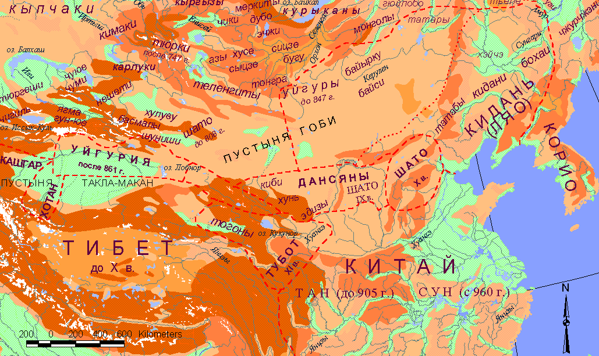
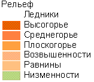
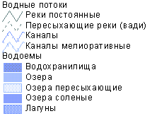
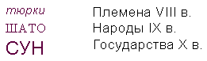

Л.Н. Гумилев. Поиски вымышленного царства.
Карта 1. Племена Великой степи с VIII по X в. (English version)
|  |
| Условные обозначения |
|   |
 |
Общее замечание. В VIII в. господство над Великой степью перешло от тюрок к уйгурам (747 г.) и затем к кыргызам (847 г.), но границы каганатов на карте опущены (см. Л.Н.Гумилев. Древние тюрки. М., 1967). Внимание уделено расположению мелких племен (курсив), слившихся к Х в. в народы (корпус) и образовавших пять крупных государств: Кидань (кит. Ляо), Шато (Кинь), Дансян (впоследствии Тангут, кит. Си-ся), Уйгурия (кит. Хойху) - два самостоятельных княжества, и тибетцы, создавшие впоследствии эфемерное царство Тубот (полужирным).
В плане этногенеза малочисленные племена заслуживают большого внимания, и потому здесь прилагается их этническая классификация, совмещающая языковые, антропологические и исторические данные.
А. Тюркоязычные племена
I. Европеоидные западносибирские племена
- (1) Кенгересы (кангар, канпой, канглы, печенеги)
- (2) Кыргызы енисейские (Гегу, Хагяс)
- (3) Кыпчаки (Кюй-юе-ше, половцы)
- (4) Чигиль (джикиль)
- (5) Тюргеши (народ, состоявший из двух больших племен: абаров, аборигенов Джунгарии, и мукринов, прикочевавших из Приамурья в III в.)
II. Телесская группа племен, в IV в. распространившаяся из Хэси по всей Великой степи, европеоидная, восходящая к восточной ветви белой расы I порядка
- (1) Уйгуры или токуз-огузы (кит. хойху)
- (2) Япма (кит. Янь-мянь)
- (3) Тонгра (кит. Тундо)
- (4) Бугу (кит. Пугу)
- (5) Курыканы (кит. Гулигань)
- (6) Изгили (кит. Сицзе)
- (7) (кит. Сыцзе)
- (8) Теленгиты (кит. Доланьгэ)
- (9) Байырку (кит. Баегу)
- (10) Эдизы (кит. Адйе)
- (11) (кит. Хусе)
- (12) (кит. Киби)
- (13) (кит. Хунь)
- (14) (кит. Байси)
- (15) (кит. гун-юе), принадлежность их телесцам по происхождению сомнительна
III. Чуйская группа - потомки хуннов, оставшихся в Средней Азии во II в. н.э.
- (1) Чуюе
- (2) Чуми
- (3) Шато - ответвление чуюе
- (4) Кямаки (кит. Чумугунь); объединились с кыпчаками и составили народ команов, или половцев
IV. Джунгарская группа
- (1) Карлуки
- (2) Басмалы
- (3) Нешети
- (4) Шуниши объединились с басмалами, приняв их имя
- (5) Хулуву
V. Саяно-алтайская группа
- (1) Чики - вымерший народ в совр. Туве
- (2) Тубалары (кит. Дубо)
- (3) Эчжень (кит. Эчжи) в Западных Саянах
- (4) Тюрки после 747 г. (кит. Ту-цзюе // тюркюты) - ветвь кок-тюрок ("голубых", или "небесных", тюрок, живших до 747 г. на Орхоне), осевшая в Горном Алтае под названием Телес (племя) и Тодош (кость). В настоящее время слилась с теленгитами. В Х-XII вв. была известна как "тикин" (от тюрк. "Тэгинь" - царевич; очевидно, таков был титул их правителя). Завоевана монголами в 1207-1208 гг.
Б. Монголоязычные народы
- (1) Кидани, или Хитаи
- (2) Татабы (кит. Хи)
- (3) Тогоны, или Ту-юй-хунь, - ветвь сяньбийцев в IV в., переселившаяся в Цайдам и завоеванная тибетцами в VII в.
- (4) Татары - племенной союз
- (5) Монголы в собственном смысле слова
В. Тунгусоязычные племена
- (1) Тьеле
- (2) Уги
- (3) Чжурчжэни
Г. Тибетоязычные племена
- (1) Дансяны, или тангуты, потомки древних жунов
- (2) Тубо, или тибетцы, потомки древних кянов
Д. Племена, принадлежность коих к этническим группам неясна
- (1) Меркиты - м.б., тюрки, м.б., монголы, м.б., самодийцы
- (2) Азы - м.б., часть кыргызского народа, м.б., просто "малый народец"?
- (3) Гюйлобо - ?!
- (4) Хэйчэ - прозвище, буквально - "Черная телега". Китайские географы считали их обитающими на границе миров реального и фантастического, где будто бы жили "тюрки с коровьими ногами".
Ссылки
Следующие страницы ссылаются на данную карту:
- Гумилёв Л. Н. Поиски вымышленного царства. Трилистник Птичьего Полета. 4. Темный век (861≈960).
- Гумилёв Л. Н. Поиски вымышленного царства. Трилистник Птичьего Полета. 5. Разорванное безмолвие (961≈1100).
- Гумилёв Л. Н. Поиски вымышленного царства. Трилистник Мыслена Древа. 14. Пространственно-временная схема, Историческая этнография.
Карта выполнена А. Родионовым в 2002 г.
Эта страница была последний раз обновлена 02/23/09.
|
|
06/10/20 - 03:44 |